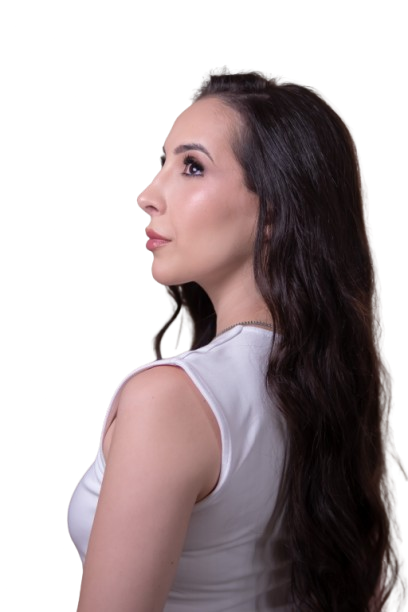
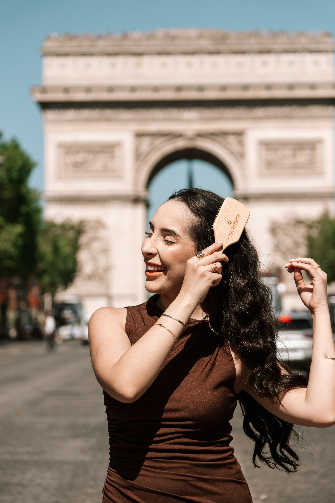

Diagnóstico Preciso
Avaliação detalhada para identificar as causas da queda capilar.
Diagnóstico preciso, tratamentos personalizados e tecnologia de ponta para restaurar a saúde capilar.

A união entre ciência, tecnologia e atendimento humanizado proporciona tratamentos personalizados para cada paciente.
Avaliação detalhada para identificar as causas da queda capilar.
Atendimento focado exclusivamente em tricologia clínica.
Protocolos exclusivos desenvolvidos para cada necessidade.
Cuidado próximo, acolhedor e focado em resultados duradouros.
Minha missão é transformar a relação das pessoas com seus cabelos através de um olhar médico, científico e individualizado.
Cada paciente recebe uma avaliação completa para compreender as causas das alterações capilares e construir um plano de tratamento personalizado.
Protocolos médicos desenvolvidos individualmente para cada paciente.

Tratamentos personalizados para diferentes tipos de alopecia, buscando recuperar densidade e saúde dos fios.
Agendar avaliação
Investigação completa das causas da queda e protocolos personalizados.
Agendar avaliação

Cada tratamento é único. Conheça alguns casos acompanhados pela Dra. Marcella Sobieray.

Após uma avaliação completa, foi desenvolvido um protocolo individualizado visando estimular o crescimento capilar e controlar a progressão da alopecia.
Cada relato representa uma experiência real de pacientes que confiaram no nosso cuidado e acompanhamento especializado.
Desde a primeira consulta me senti acolhida. O tratamento foi conduzido com muito cuidado e hoje minha autoestima voltou junto com meus cabelos.
Para evitar erros na rota, recomendamos utilizar o botão abaixo para abrir a localização correta da clínica diretamente no Google Maps.
R. Júlio Estrela Moreira, 1190
Canaã, Londrina - PR
CEP: 86015-070
(43) XXXX-XXXX
Segunda à Sexta
08h às 18h
Cada tratamento é planejado de forma individual, respeitando as necessidades de cada paciente. Agende sua consulta e dê o primeiro passo para recuperar a saúde dos seus cabelos e a sua autoestima.